Character Sheets
I decided to play into the idea of contrasting between misfortune and good luck because of China’s culture of auspiciousness. I chose a crow and red-crowned crane to represent these sides both because of the dichotomy of their appearances and because of their meaning in Chinese superstition.
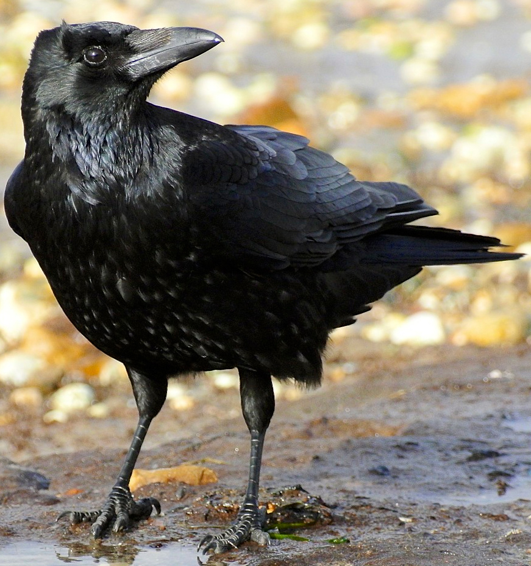
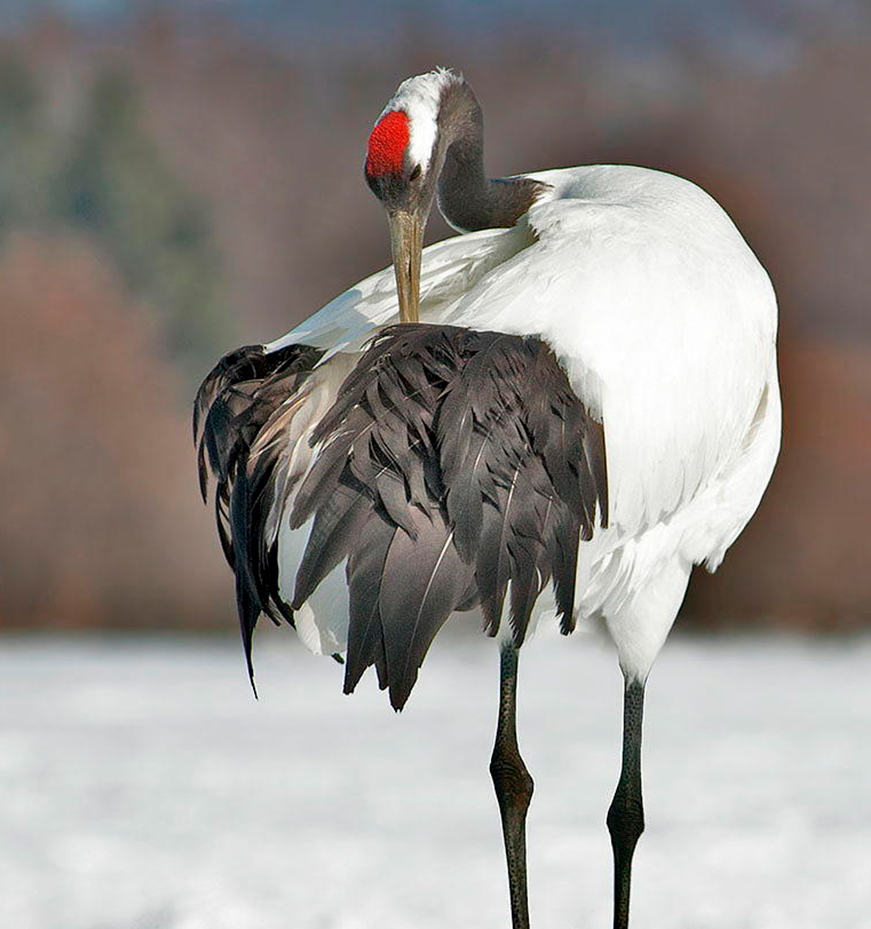
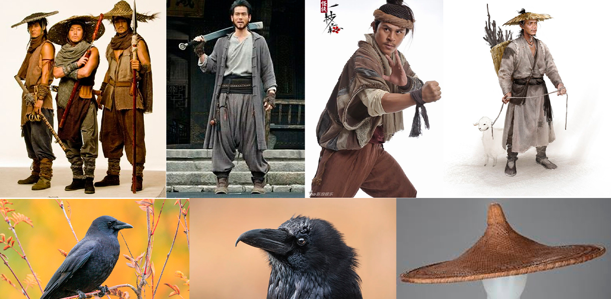
Crows are often associated with bad omens in Chinese culture, labeled as harbingers of misfortune. At this stage of my research, I was conceptualizing a former warrior still clinging on to their pride from the past, or a rogue/bandit character. I researched clothing average citizens might wear, tattered but appropriate for a quick getaway or scuffle on the streets. Conical hats are common in Asian countries to combat the sun, so I wanted to implement it into this rogue character that would be travelling around.
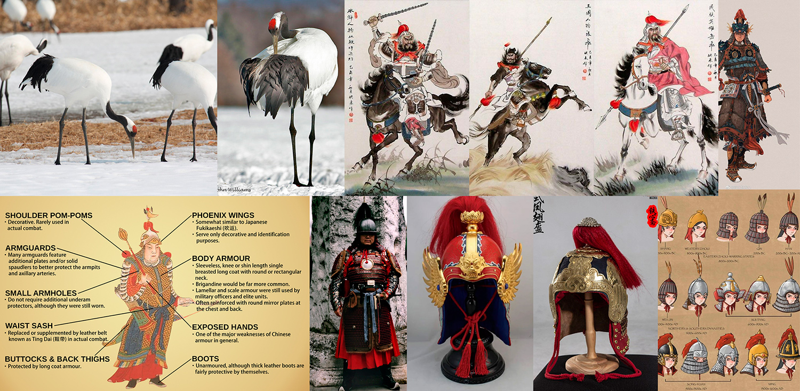
The red-crowned crane is often associated with longevity, wisdom, peace and harmony in China. With these attributes, I immediately thought of an honourable and grand warrior. In my research, I found that the helmets of ancient China are often adorned with bird feathers at the top — fitting for my theme. Red and gold are both prominent colours of China, with the red symbolizing good fortune and gold symbolizing prosperity. I tried to keep these in mind as I was designing the character.
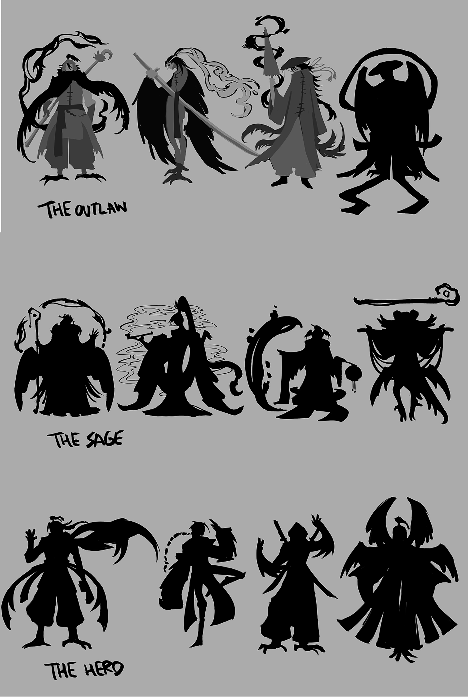
In my thumbnailing and exploration phase, I played around with the ratio of human to bird, and how wings would translate on a human’s anatomy. Perhaps it would be attached to the arms, or coming from their back. I wanted to create an air of mystery into the crow’s design, so in some of the thumbnails I created a wide conical hat to hide his face partially. In my thumbnailing of the red-crowned crane hero, I was exploring different ideas between a grand warrior decorated heavily, or a more cunning and sleek design.
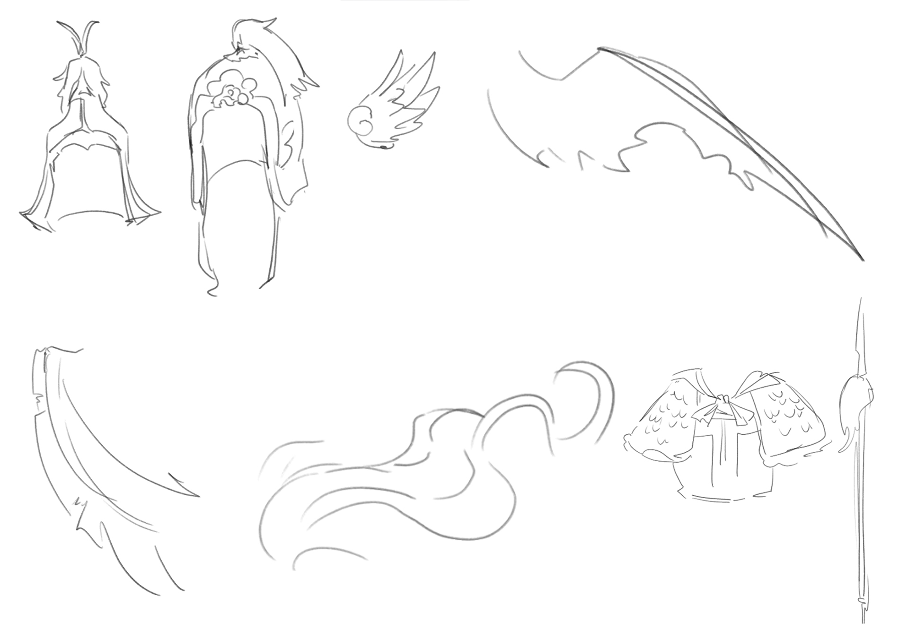
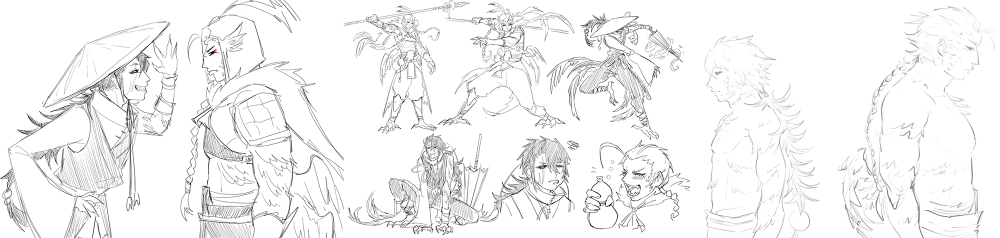
In the conceptual sketch phase, this is where I was figuring out their personalities and body language. Because outlaws portrayed in media are always mysterious and stoic, I wanted to break the mold by making the rogue more mischievous and sly — he is a crow after all! In turn, to contrast his playfulness, I thought the red-crowned crane warrior being the more stoic and stern one would create an interesting dynamic between the two.
Key Art
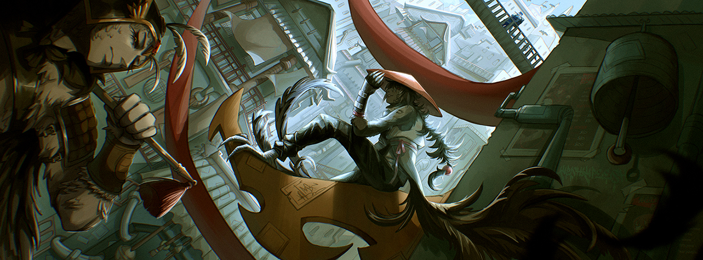Inspiration
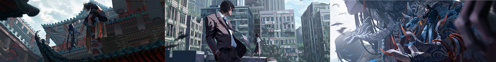
My first step was to look at one of my favourite artists, Felicia Chen, and her work. I broke down elements of her art and noted down what made her compositions so successful. In many of her work, contrast and strong silhouettes were most prevalent. The ratio of her canvas’ are narrow, allowing for a more cinematic and clear focal point. In each work, there is a distinct foreground, middle ground, and background in which the further a subject is, the more faded it is painted.
Lineart
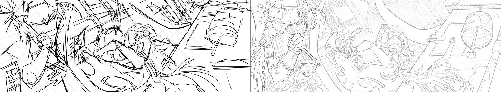
I decided to challenge myself by tackling a challenging angle, using a rough grid to map out the layouts of the buildings. When I draw complex angles such as this one, I think of the subjects as cubes to break down such a daunting task into something more simple.
When I am in the line art stage, I always use heavier lines for the foreground and lighter ones as it gets further back to ease some tension off the viewer’s eyes.
Base Colours
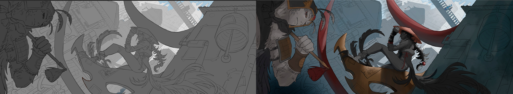
In this stage, I started trying to figure out the hierarchy of the piece using a darker foreground and transitioning to a lighter background. I coloured the composition in a grayscale to manage the layers more easily. I slowly applied base colours using a blue hue as the base colour.
Lighting
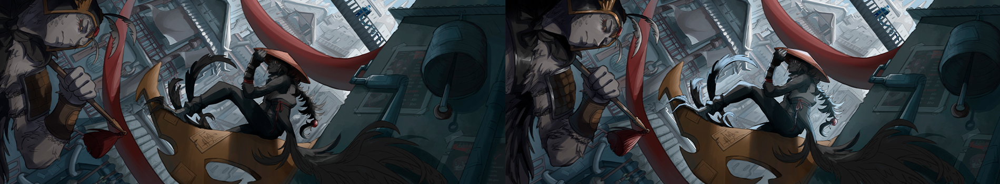